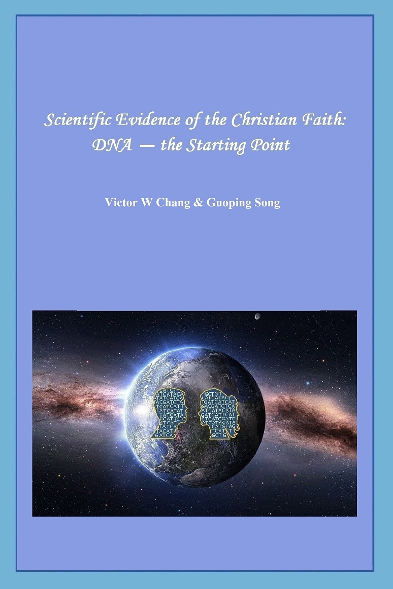

|  | |||||||||
|
. However, since DNA is discovered, the result is just like paternity test, it is confirmed that the entire human’s DNA coding sequence is consistent and the difference is only one thousandth. The theory of mathematics-probability told us that it could not be the result of spontaneous generation. Therefore, the molecular biologist put forward that people of the whole world have the common grandfather- Y chromosome Adam theory; and the common grandmother-Eve theory. Do you agree?
. Due to the constancy of biological genome DNA coding, it is impossible for any species to have evolution connection, not even microevolution. This is what is recorded in the Bible as “all living from each category”. It therefore can be seen that life’s DNA coding sequence is from God’s Creation.
. |
|||||||||